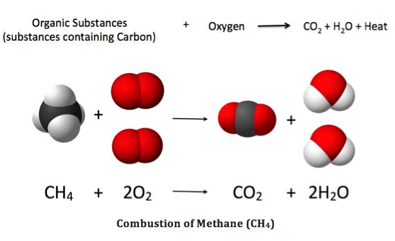

ปฏิกิริยาเคมีของสารประกอบอินทรีย์
ปฏิกิริยาเคมีของสารประกอบอินทรีย์เป็นกระบวนการที่สารอินทรีย์เกิดการเปลี่ยนแปลงทางเคมีจากสารตั้งต้นไปเป็นสารผลิตภัณฑ์ที่มีโครงสร้างหรือสมบัติแตกต่างจากเดิม ปฏิกิริยาเหล่านี้เกิดขึ้นได้หลายรูปแบบ โดยขึ้นอยู่กับชนิดของสาร โครงสร้างโมเลกุล และสภาวะที่ใช้ในการเกิดปฏิกิริยา
ประเภทของปฏิกิริยาเคมีของสารอินทรีย์
1. ปฏิกิริยาการเผาไหม้ (Combustion Reaction) เป็นปฏิกิริยาระหว่างสารอินทรีย์กับออกซิเจน เมื่อเกิดการเผาไหม้อย่างสมบูรณ์ของไฮโดรคาร์บอน จะได้คาร์บอนไดออกไซด์ น้ำ และพลังงาน ตัวอย่างเช่น การเผาไหม้ของมีเทน
2. ปฏิกิริยาการเติม (Addition Reaction) เป็นปฏิกิริยาที่สารอื่นเข้ามาเติมในพันธะคู่หรือพันธะสามของสารอินทรีย์ ทำให้พันธะหลายกลายเป็นพันธะเดี่ยว ตัวอย่างเช่น เอทีนทำปฏิกิริยากับไฮโดรเจนและเกิดเป็นอีเทน
3. ปฏิกิริยาการแทนที่ (Substitution Reaction) เป็นปฏิกิริยาที่อะตอมหรือหมู่อะตอมบางส่วนในโมเลกุลถูกแทนที่ด้วยอะตอมหรือหมู่อื่น ตัวอย่างเช่น ปฏิกิริยาของมีเทนกับคลอรีนเมื่อมีแสง
4. ปฏิกิริยาการกำจัด (Elimination Reaction) เป็นปฏิกิริยาที่อะตอมหรือหมู่อะตอมบางส่วนถูกกำจัดออกจากโมเลกุล ทำให้เกิดพันธะคู่หรือพันธะสามขึ้น ตัวอย่างเช่น การเปลี่ยนเอทานอลให้เป็นเอทีนภายใต้สภาวะที่เหมาะสม
ปฏิกิริยาเคมีของสารอินทรีย์มีความสำคัญต่อการผลิตสารเคมีและผลิตภัณฑ์ต่าง ๆ เช่น พลาสติก ยา เชื้อเพลิง และสารทำความสะอาด ความรู้เกี่ยวกับปฏิกิริยาเหล่านี้ช่วยให้นักวิทยาศาสตร์สามารถควบคุมการเปลี่ยนแปลงของสารและพัฒนาผลิตภัณฑ์ใหม่ ๆ ได้